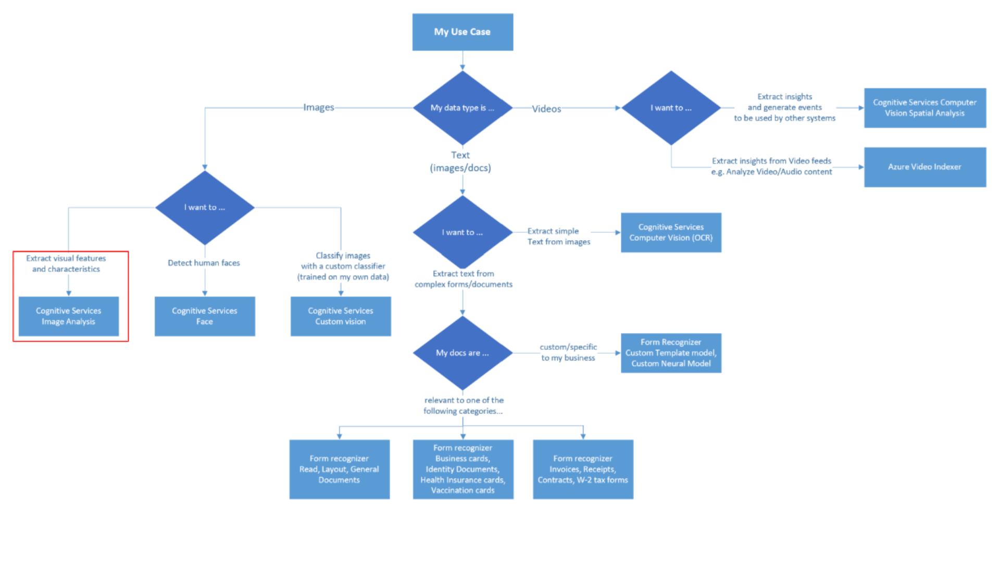
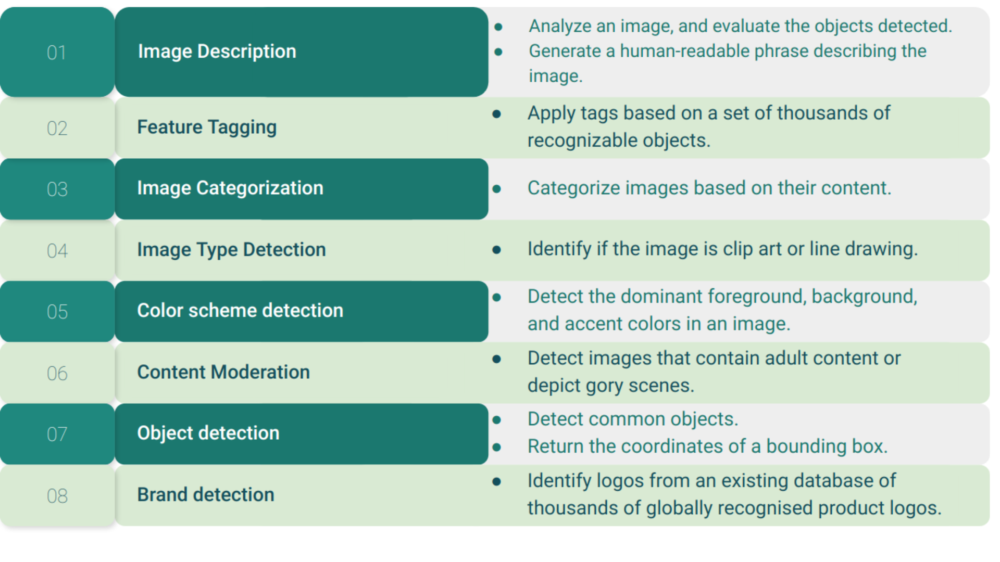
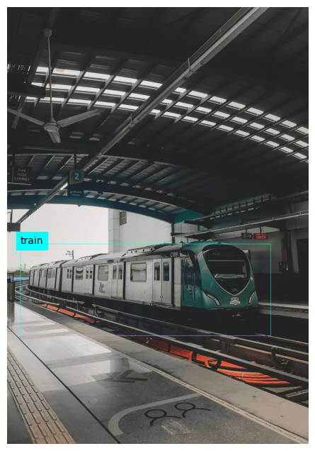
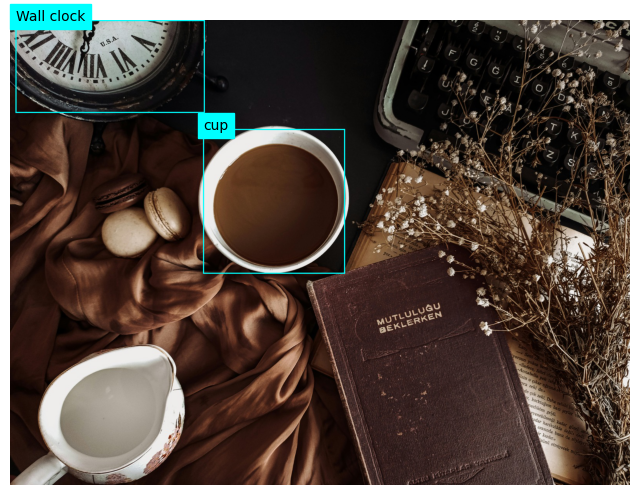

Show the code
# Importing library to view image
from IPython.display import Image as imgThis file intends to introduce the learners to the Computer Vision Service offered by Azure, through the means of Python SDK. We will create a vision resource in Azure, but the rest of the tasks related to image analysis will be conducted by way of Python SDK for Azure Computer Vision.
For the purpose of this session, we will analyse images stored in local system. There is one more way to analyse images, which is to read them remotely through the url.
We would also encourage you to feed different resolutions of the same image to study how the analysis changes.
# Importing library to view image
from IPython.display import Image as imgAzure offers a lot of capablities to analyse images, as shown in the following chart.
From these various services, in this session, which we will study Computer Vision, which has the the capability to extract visual features and describe images.
img('vision services intro.png')
Reference: https://learn.microsoft.com/en-us/azure/architecture/data-guide/cognitive-services/vision-api
img('cv use cases.png')
# Azure Computervision library:
!pip install --upgrade azure-cognitiveservices-vision-computervision
# Pillow library: Python Imaging Library (PIL) provides a simple and efficient way to work with images in Python
!pip install pillow
# dotenv library
!pip install python-dotenvCollecting azure-cognitiveservices-vision-computervision
Downloading azure_cognitiveservices_vision_computervision-0.9.0-py2.py3-none-any.whl (39 kB)
Collecting msrest>=0.5.0 (from azure-cognitiveservices-vision-computervision)
Downloading msrest-0.7.1-py3-none-any.whl (85 kB)
━━━━━━━━━━━━━━━━━━━━━━━━━━━━━━━━━━━━━━━━ 85.4/85.4 kB 2.7 MB/s eta 0:00:00
Collecting azure-common~=1.1 (from azure-cognitiveservices-vision-computervision)
Downloading azure_common-1.1.28-py2.py3-none-any.whl (14 kB)
Collecting azure-core>=1.24.0 (from msrest>=0.5.0->azure-cognitiveservices-vision-computervision)
Downloading azure_core-1.30.1-py3-none-any.whl (193 kB)
━━━━━━━━━━━━━━━━━━━━━━━━━━━━━━━━━━━━━━━ 193.4/193.4 kB 4.6 MB/s eta 0:00:00a 0:00:01
Requirement already satisfied: certifi>=2017.4.17 in /Users/kashmkj/micromamba/envs/fastai/lib/python3.11/site-packages (from msrest>=0.5.0->azure-cognitiveservices-vision-computervision) (2022.12.7)
Collecting isodate>=0.6.0 (from msrest>=0.5.0->azure-cognitiveservices-vision-computervision)
Downloading isodate-0.6.1-py2.py3-none-any.whl (41 kB)
━━━━━━━━━━━━━━━━━━━━━━━━━━━━━━━━━━━━━━━━ 41.7/41.7 kB 4.4 MB/s eta 0:00:00
Requirement already satisfied: requests-oauthlib>=0.5.0 in /Users/kashmkj/micromamba/envs/fastai/lib/python3.11/site-packages (from msrest>=0.5.0->azure-cognitiveservices-vision-computervision) (1.3.1)
Requirement already satisfied: requests~=2.16 in /Users/kashmkj/micromamba/envs/fastai/lib/python3.11/site-packages (from msrest>=0.5.0->azure-cognitiveservices-vision-computervision) (2.29.0)
Requirement already satisfied: six>=1.11.0 in /Users/kashmkj/micromamba/envs/fastai/lib/python3.11/site-packages (from azure-core>=1.24.0->msrest>=0.5.0->azure-cognitiveservices-vision-computervision) (1.16.0)
Requirement already satisfied: typing-extensions>=4.6.0 in /Users/kashmkj/micromamba/envs/fastai/lib/python3.11/site-packages (from azure-core>=1.24.0->msrest>=0.5.0->azure-cognitiveservices-vision-computervision) (4.9.0)
Requirement already satisfied: charset-normalizer<4,>=2 in /Users/kashmkj/micromamba/envs/fastai/lib/python3.11/site-packages (from requests~=2.16->msrest>=0.5.0->azure-cognitiveservices-vision-computervision) (3.1.0)
Requirement already satisfied: idna<4,>=2.5 in /Users/kashmkj/micromamba/envs/fastai/lib/python3.11/site-packages (from requests~=2.16->msrest>=0.5.0->azure-cognitiveservices-vision-computervision) (3.4)
Requirement already satisfied: urllib3<1.27,>=1.21.1 in /Users/kashmkj/micromamba/envs/fastai/lib/python3.11/site-packages (from requests~=2.16->msrest>=0.5.0->azure-cognitiveservices-vision-computervision) (1.26.15)
Requirement already satisfied: oauthlib>=3.0.0 in /Users/kashmkj/micromamba/envs/fastai/lib/python3.11/site-packages (from requests-oauthlib>=0.5.0->msrest>=0.5.0->azure-cognitiveservices-vision-computervision) (3.2.2)
Installing collected packages: azure-common, isodate, azure-core, msrest, azure-cognitiveservices-vision-computervision
Successfully installed azure-cognitiveservices-vision-computervision-0.9.0 azure-common-1.1.28 azure-core-1.30.1 isodate-0.6.1 msrest-0.7.1
Requirement already satisfied: pillow in /Users/kashmkj/micromamba/envs/fastai/lib/python3.11/site-packages (9.4.0)
Requirement already satisfied: python-dotenv in /Users/kashmkj/micromamba/envs/fastai/lib/python3.11/site-packages (1.0.0)# To run the Azure Computer Vision Service
from azure.cognitiveservices.vision.computervision import ComputerVisionClient
# To extract specific features from the image
from azure.cognitiveservices.vision.computervision.models import VisualFeatureTypes
# To authenticate the client
from msrest.authentication import CognitiveServicesCredentials
# To draw bounding boxes in images
from PIL import Image, ImageDraw
import matplotlib.pyplot as plt
# To read the secret keys for Authentication
import os
from dotenv import load_dotenvimg('cv1.png')
# Read the environment variables to authenticate to the Computer Vision resource
load_dotenv()
subscription_key = os.environ.get("AZURE_CV_KEY")
endpoint = os.environ.get("AZURE_CV_ENDPOINT")
computervision_client = ComputerVisionClient(endpoint, CognitiveServicesCredentials(subscription_key))For this case study, we will import several images to best illustrate the specific area of interest, as listed above.
features = [VisualFeatureTypes.description,
VisualFeatureTypes.tags,
VisualFeatureTypes.categories,
VisualFeatureTypes.brands,
VisualFeatureTypes.objects]We upload 3 images for us to test the Azure CV SDK, and how well it performs on our use-cases. The idea of testing it on 2 images is, so that we can test images containing 1 object, and more than 1 object.
# Uploading Image to be analysed
image_file_1 = 'img-1.jpg' ## Consisting of one object
image_file_2 = 'img-2.jpg' ## Consisting of more than 1 objectsimg(image_file_1)img(image_file_2)#### Get image analysis
with open(image_file_1, mode="rb") as image_data:
# call the API.
# The first argument in the function is the image to be analysed. The second argument is the list of features to be extracted from this image.
# We will run the analysis once per image. Then, we will display each feature in a new cell.
analysis_1 = computervision_client.analyze_image_in_stream(image_data ,features)
with open(image_file_2, mode="rb") as image_data:
# call the API.
# The first argument in the function is the image to be analysed. The second argument is the list of features to be extracted from this image.
# We will run the analysis once per image. Then, we will display each feature in a new cell.
analysis_2 = computervision_client.analyze_image_in_stream(image_data ,features)# Get image description
if (len(analysis_1.description.captions) > 0):
print("Describing the image: ")
for caption in analysis_1.description.captions:
print("Description: '{}' (confidence: {:.2f}%)".format(caption.text, caption.confidence * 100))
else:
print('No description found.')
if (len(analysis_2.description.captions) > 0):
print("Describing the image: ")
for caption in analysis_2.description.captions:
print("Description: '{}' (confidence: {:.2f}%)".format(caption.text, caption.confidence * 100))
else:
print('No description found.')Describing the image:
Description: 'a train on the railway tracks' (confidence: 56.06%)
Describing the image:
Description: 'a person holding a cup of coffee' (confidence: 37.11%)# Get image tags
if (len(analysis_1.tags) > 0):
print("These are the tags associated with the train image:")
for tag in analysis_1.tags:
print(" -'{}' (confidence: {:.2f}%)".format(tag.name, tag.confidence * 100))
else:
print("No image tags found")
print("\n")
if (len(analysis_2.tags) > 0):
print("These are the tags associated with the cup image:")
for tag in analysis_2.tags:
print(" -'{}' (confidence: {:.2f}%)".format(tag.name, tag.confidence * 100))
else:
print("No image tags found")These are the tags associated with the train image:
-'transport' (confidence: 99.08%)
-'track' (confidence: 98.54%)
-'railway' (confidence: 97.13%)
-'train' (confidence: 96.30%)
-'train station' (confidence: 96.13%)
-'railroad' (confidence: 96.13%)
-'transport hub' (confidence: 94.60%)
-'vehicle' (confidence: 94.48%)
-'rolling stock' (confidence: 94.17%)
-'public transport' (confidence: 93.73%)
-'railroad car' (confidence: 90.11%)
-'passenger car' (confidence: 88.99%)
-'metro station' (confidence: 88.57%)
-'land vehicle' (confidence: 86.54%)
-'metro' (confidence: 85.52%)
-'electric locomotive' (confidence: 84.55%)
-'steel' (confidence: 84.09%)
-'platform' (confidence: 77.56%)
-'outdoor' (confidence: 73.48%)
-'rail' (confidence: 54.81%)
These are the tags associated with the cup image:
-'coffee cup' (confidence: 92.45%)
-'tea' (confidence: 91.18%)
-'caffeine' (confidence: 88.29%)
-'mug' (confidence: 87.51%)
-'serveware' (confidence: 87.03%)
-'tableware' (confidence: 86.85%)
-'cup' (confidence: 84.61%)
-'indoor' (confidence: 79.81%)
-'coffee' (confidence: 78.33%)
-'chocolate' (confidence: 44.77%)# Get image categories
if (len(analysis_1.categories) > 0):
print("Categories:")
landmarks = []
for category in analysis_1.categories:
# Print the category
print(" -'{}' (confidence: {:.2f}%)".format(category.name, category.score * 100))
if category.detail:
# Get landmarks in this category
if category.detail.landmarks:
for landmark in category.detail.landmarks:
if landmark not in landmarks:
landmarks.append(landmark)
# If there were landmarks, list them
if len(landmarks) > 0:
print("Landmarks:")
for landmark in landmarks:
print(" -'{}' (confidence: {:.2f}%)".format(landmark.name, landmark.confidence * 100))
else:
print("Unable to find image categories.")Categories:
-'trans_trainstation' (confidence: 99.22%)# Get image categories
if (len(analysis_2.categories) > 0):
print("Categories:")
landmarks = []
for category in analysis_2.categories:
# Print the category
print(" -'{}' (confidence: {:.2f}%)".format(category.name, category.score * 100))
if category.detail:
# Get landmarks in this category
if category.detail.landmarks:
for landmark in category.detail.landmarks:
if landmark not in landmarks:
landmarks.append(landmark)
# If there were landmarks, list them
if len(landmarks) > 0:
print("Landmarks:")
for landmark in landmarks:
print(" -'{}' (confidence: {:.2f}%)".format(landmark.name, landmark.confidence * 100))
else:
print("Unable to find image categories.")Categories:
-'drink_' (confidence: 71.09%)
-'others_' (confidence: 0.78%)print("===== Object Detection =====")
# Get objects in the image
if len(analysis_1.objects) > 0:
print("Objects in image:")
# Prepare image for drawing
fig = plt.figure(figsize=(8, 8))
plt.axis('off')
image = Image.open(image_file_1)
draw = ImageDraw.Draw(image)
color = 'cyan'
for detected_object in analysis_1.objects: # Change 'analysis' to 'analysis_1'
# Print object name
print(" -{} (confidence: {:.2f}%)".format(detected_object.object_property, detected_object.confidence * 100))
# Draw object bounding box
r = detected_object.rectangle
bounding_box = ((r.x, r.y), (r.x + r.w, r.y + r.h))
draw.rectangle(bounding_box, outline=color, width=3)
plt.annotate(detected_object.object_property,(r.x, r.y), backgroundcolor=color)
# Save annotated image
plt.imshow(image)
# Save the annotated image in a new file for future reference
outputfile = 'objects_1.jpg'
fig.savefig(outputfile)
print(' Results saved in', outputfile)
else:
print('No objects found in the image.')===== Object Detection =====
Objects in image:
-train (confidence: 78.90%)
Results saved in objects_1.jpg
print("===== Object Detection =====")
# Get objects in the image
if len(analysis_2.objects) > 0:
print("Objects in image:")
# Prepare image for drawing
fig = plt.figure(figsize=(8, 8))
plt.axis('off')
image = Image.open(image_file_2) # Changed to image_file_2
draw = ImageDraw.Draw(image)
color = 'cyan'
for detected_object in analysis_2.objects: # Changed to analysis_2
# Print object name
print(" -{} (confidence: {:.2f}%)".format(detected_object.object_property, detected_object.confidence * 100))
# Draw object bounding box
r = detected_object.rectangle
bounding_box = ((r.x, r.y), (r.x + r.w, r.y + r.h))
draw.rectangle(bounding_box, outline=color, width=3)
plt.annotate(detected_object.object_property,(r.x, r.y), backgroundcolor=color)
# Save annotated image
plt.imshow(image)
# Save the annotated image in a new file for future reference
outputfile_2 = 'objects_2.jpg'
fig.savefig(outputfile_2)
print(' Results saved in', outputfile_2)
else:
print('No objects found in the image.')===== Object Detection =====
Objects in image:
-Wall clock (confidence: 71.80%)
-cup (confidence: 53.90%)
Results saved in objects_2.jpg
'''
Content moderation
This example gives content ratings of a local image.
'''
print("===== Content moderation =====")
# Get moderation ratings
ratings_1 = 'Ratings:\n -Adult: {}\n -Racy: {}\n -Gore: {}'.format(analysis_1.adult.is_adult_content,
analysis_1.adult.is_racy_content,
analysis_1.adult.is_gory_content)
print(ratings_1)
print("\n")
# Get moderation ratings
ratings_2 = 'Ratings:\n -Adult: {}\n -Racy: {}\n -Gore: {}'.format(analysis_2.adult.is_adult_content,
analysis_2.adult.is_racy_content,
analysis_2.adult.is_gory_content)
print(ratings_2)===== Content moderation =====
Ratings:
-Adult: False
-Racy: False
-Gore: False
Ratings:
-Adult: False
-Racy: False
-Gore: False'''
Detect brands
This example detects brands in a local image.
'''
print("===== Detect brands =====")
# Get brands in the image
if (len(analysis_1.brands) > 0):
print("Brands: ")
for brand in analysis_1.brands:
print(" -'{}' (confidence: {:.2f}%)".format(brand.name, brand.confidence * 100))
else:
print("No brands detected in image.")
if (len(analysis_2.brands) > 0):
print("Brands: ")
for brand in analysis_2.brands:
print(" -'{}' (confidence: {:.2f}%)".format(brand.name, brand.confidence * 100))
else:
print("No brands detected in image.")===== Detect brands =====
No brands detected in image.
No brands detected in image.img('cv_del.png')